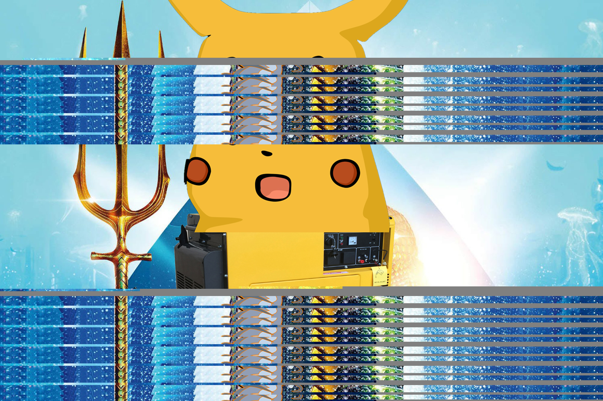
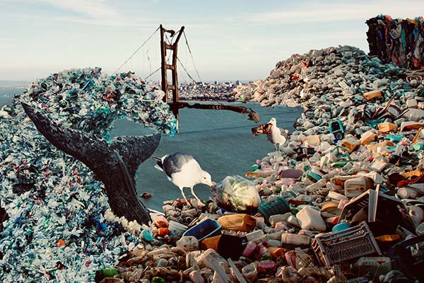

In recently project, I focus on created digital art piece in different medium. I used Adobe photoshop in my digital art piece, and Adobe premier pro in my audio and video art pieces. Also the most interested medium for me is the html web page. All of these piece address some problems in currect world and offer viewer the specific experience.
For example, In the art pieces "Release Stress", it inspired by many net art pieces "dreaming site" by the artist Mayer,
she created a sleeping site and provide viewer dreaming experience. Therefore I use interactive art form to deliver my idea. I provide a environment to the viewer experience the feeling of release the stress. Also I pull up the P5JS in the html web page, it give more interactive choice to the viewer and push the idea further.

Glitch Art, Digital Image, 2018
In this project, I used text editor recreate a glitch image with replace the text, and extend its
body, repeat it as well. The concept is blur the image and make it unclean. And people can guess
the original looks and may have ambiguities.

Plastic Bridge,Digital Image, 2018
My concept is rebuilt the exist neighbor place to talk about the environment and plastic waste issues. I search the image about plastic pollution, then put them together to make a new collage art. I name it“Plastic State Bridge”.
In our project, "Memory". I had created a web page with my group member Guoxun, it inspired
by our earlier internet memories. It's a combination of earlier chatting environment we used and
the classic pixel game. The style we made is base on the experience at that time period. Such as
the text, screen, button, sound and border style. Also the thing with many "errors".
In the project, I combine the P5js, composite art, and HTML together. The idea is talked about waste in the ocean, how it affects ocean life. And trying to address this issue by using web space.
I made an airplane flying on a bright sunny day when mouse click the weather will change to a dark rainy day. The sun will become the moon, and the star and rain will show.